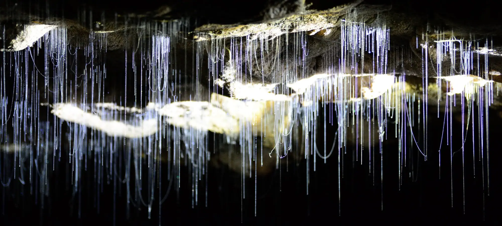

Your Local Guide
Explore Waitomo
From the world famous Glowworm Caves to hidden bush walks, ziplines, and Lord of the Rings film locations — Waitomo and the surrounding region is packed with unforgettable experiences. Wild Canvas is your perfect base.